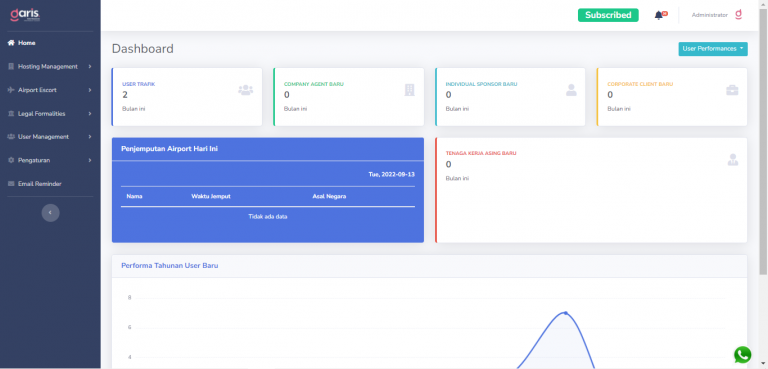
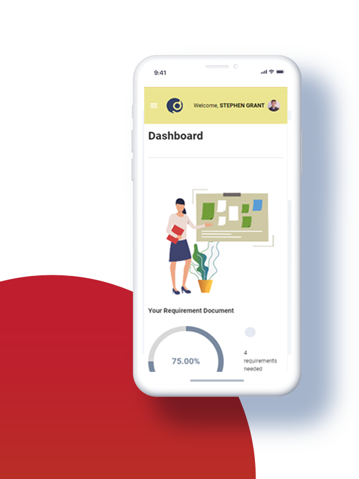
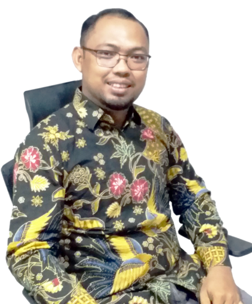

Moodboard
Korporat yang hangat
Kerangka dari Company Profile 2026 (bidang diagonal maroon, foto gedung kota, ikon dalam lingkaran), struktur halaman dari letsmoveindonesia.com, dan nada santai-edukatif dari Instagram @apegaleindonesia.
Kata kunci
Diagonal maroonGedung kota JakartaDaun & titik logoIkon garis dalam lingkaranTalent nyataEdukatifDwibahasaPeta 35+ kotaOranye/kuning/biru web lamaFoto stok watermarkSlider otomatis
maroon
maroon-deep
red
brand-tint
surface
Sumber 1 · Company Profile 2026 (identitas)


Sumber 2 · letsmoveindonesia.com (struktur, bukan warna)


Sumber 3 · Instagram @apegaleindonesia (nada)
Indonesia, here you comeGradasi maroon, headline kapital tebal, foto paspor/talent.
Istilah imigrasi yang sering bikin bingungKonten edukatif → bahan FAQ & News. Tanda tanya merah 3D sebagai aksen.
Got questions? Talk to usTalent internal berpose ekspresif; CTA WhatsApp di setiap postingan.
Produk · GARIS



Yang ditinggalkan · website lama